Intro
All the examples that are described below belong to the Unity Actor Simulator Examples repository. The aim of this project is to act as a first steps tutorial of the Unity Actor Simulator framework. In addition, for those that don't want to waste time in learning new stuff like Unity Engine or this open-source project, this work can be used as it is in order to properly simulate your custom QActors. Thus, if you are attending the professor's course, you can simply download this project, configure it, and you are done at Unity side.Note: Please notice that this project only defines one custom behaviour, which is a simple 2D WASD movement of a ground actor (i.e. a ddr robot).
Project Contents
The Unity Actor Simulation Examples project can be described by the following image.
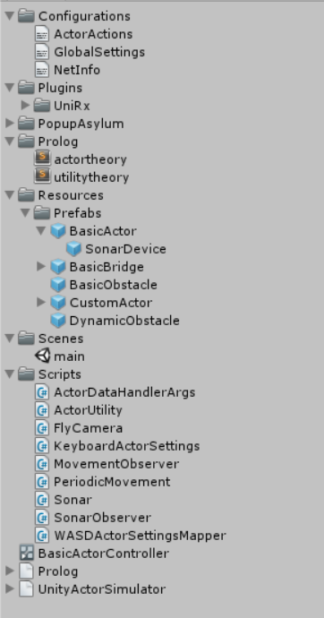
As you can see, we can identify the following contents.
- Configuration: Json configuration files used by the SettingsDatabase (ActorActions and GlobalSettings) and the TcpConnectorListener components (NetInfo). We will describe the contents of these files in the examples below.
- Plugins: it only contains the UniRx library since the Unity Prolog one is imported as a dll in the Assets folder.
- Prolog: prolog theories that are invoked by the default TcpReactiveActorClientHandler. We will describe the contents of these files in the examples below.
-
Prefabs: the Prefab asset type allows you to store a GameObject object complete with components and properties. The prefab acts as a template from which you can create new object instances in the scene. Any edits made to a prefab asset are immediately reflected in all instances produced from it but you can also override components and settings for each instance individually. In this project we introduce the following Prefabs.
-
BasicActor: this very simple custom 3D model is composed by two cubes. The first one (black cube) has attached a movement script that allows it to move. The second one (white cube) has attached a custom script that allows it to detect obstacles. We will describe these behaviours in details in the examples below.
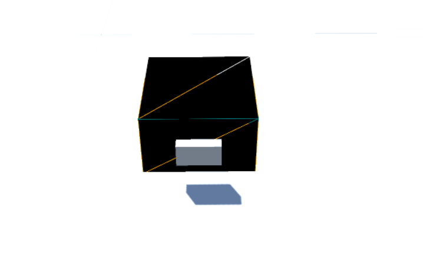
-
CustomActor: in order to render something relatively pretty, I've downloaded a set of custom 3D models, one of which I've decided to use for the simulated actor. All the download models are located in the PopupAsylum folder.
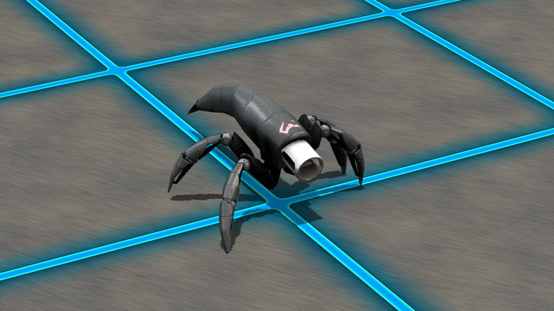
-
BasicBridge: a very simple bridge like 3D model.
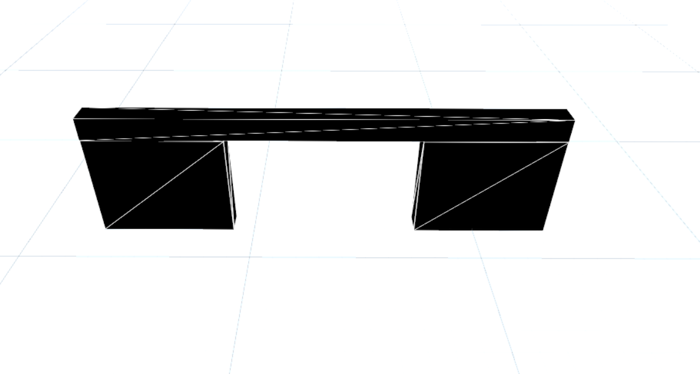
-
BasicObstacle: a 3D wall obstacle.
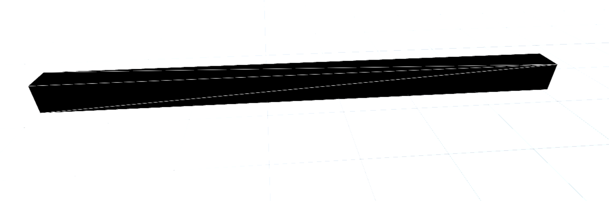
-
DynamicObstacle: a cube obstacle that has attached a movement script called PeriodicMovement which defines a patrol like behaviour.
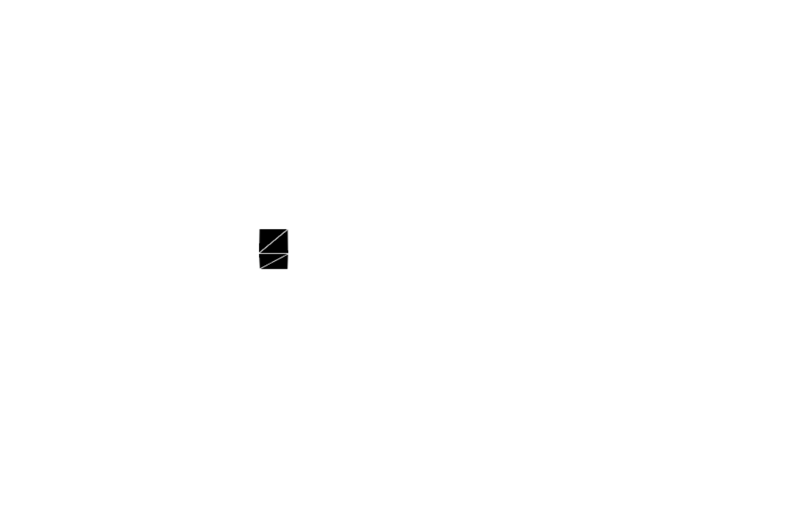
-
BasicActor: this very simple custom 3D model is composed by two cubes. The first one (black cube) has attached a movement script that allows it to move. The second one (white cube) has attached a custom script that allows it to detect obstacles. We will describe these behaviours in details in the examples below.
- Scripts: all the C# scripts that are listed under the Scripts folder will be described in detail in the following examples.
Install
Before showing off all the project's stuff, we need to briefly explain how you can use it. Since this work is a Unity project, all you need to do is to download the repository and copy its contents into your own project (Scripts contents goes under your Scripts folder and so on). Remember that you can name your folder as you like excepts for the following ones, since are they are required both by Unity Engine and Unity Actor Simulator.- Assets/Configuration -> required by Unity Actor Simulator
- Assets/Resources/Prefabs -> required by Unity Engine
Example 1: Moving the Actor
In this first example we want to simulate a basic 2D WASD movement in Unity. First of all, we have to define the actor's behaviour within the QActors framework and then map it into the simulation engine. Let's proceed step by step.QActor side
First of all we need to define the whole system via the qa DSL.
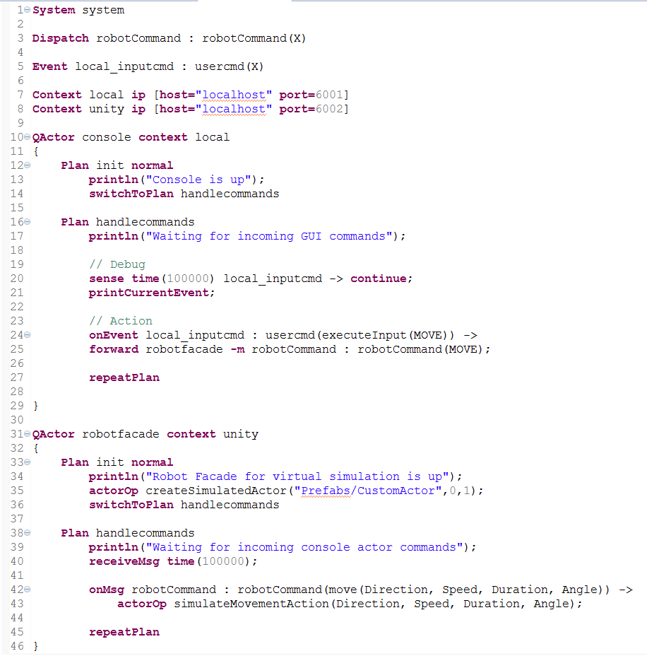
As you can see, we have two actors.
-
Console: forwards messages to the robot. More precisely, it sends messages in the form of
robotCommand(move(Direction, Speed, Duration, Angle))where the movement parameters represents the following properties.- Direction: W,A,S,D,SPACE symbols.
- Speed: a float value.
- Duration: a float value. If it is equal to 0, then the movement command is repeated forever.
- Angle: a float value.
- Robot Facade: simple actor that receives incoming movement commands and forwards them to the Unity Engine. This is done by using this simple TCP connector package.
Note: In order to use the Java TCP connector, simply download the jar file and follow these instructions.
- Select your actor script under src folder (the one that extends from the abstract one).
- Modify the script in order to implement the ISimulated interface.
- Make sure to initialize the UnityConnector by invoking its constructor and the connect method.
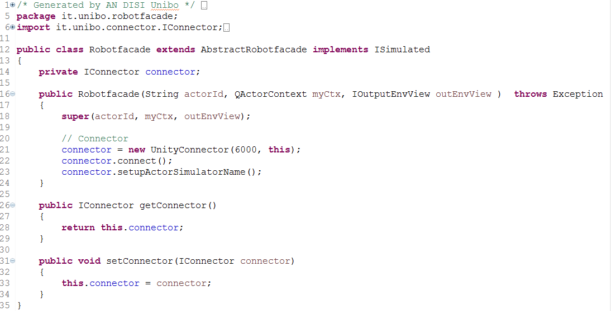
Note: The setupActorSimulatorName method is an utility function that allows to change the unity side client'handler ID. More precisely, when a new client connection is established a client's handler instance is created, whose ID is equal to "ClientIPAddress/ClientPort". If you want to send data to the QActors' framework, firstly you need to access to the client's handler of your destination actor. By invoking the setupActorSimulatorName method, the client's handler ID is renamed as "ActorName", which is easier to find and to remember.
Please notice that the setupActorSimulatorName basically sends a prolog like string data that is handled by the utilitytheory.prolog theory file. Therefore, during the configuration phase of your project, remember to properly consult this prolog theory file via the KB component .
In order to send movement commands, in accordance with the already explained format, we introduce the following custom GUI. You can view the source code by clicking here . In particular, remember to replace your actor's default IOutputEnvView with this custom GUI.
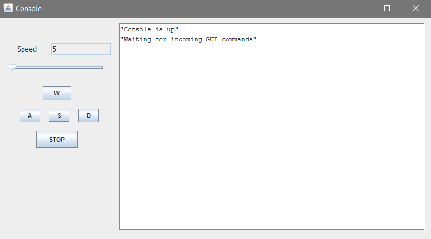
Lastly, as it can be observed from the qa system's definition, the last configuration step regards the definition of all the actions required to simulate your actor. More precisely, we have to define the business logic of the actor inside its Java class, which can be summed up by the following functionalities.
- Actor's creation.
- Movement commands transmission.
- Generic commands transmission.
The following image reports a possible representation of the behaviour that we are looking for. Please remember that each function must have its prolog counterpart within some theory file!
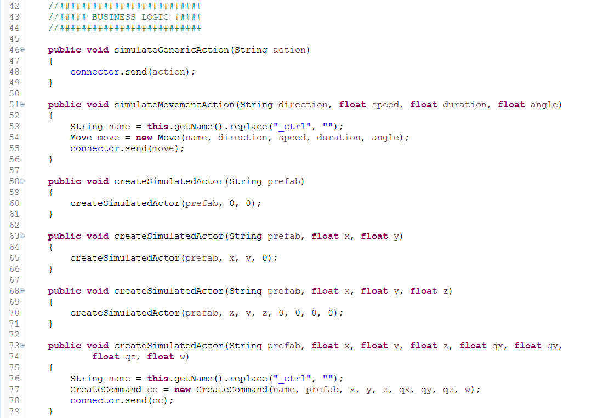
Note: The Move and CreateCommand classes are just simple POJOs. The following images show the content of these Java classes.
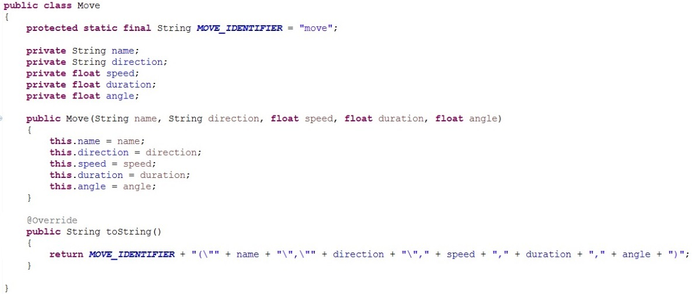
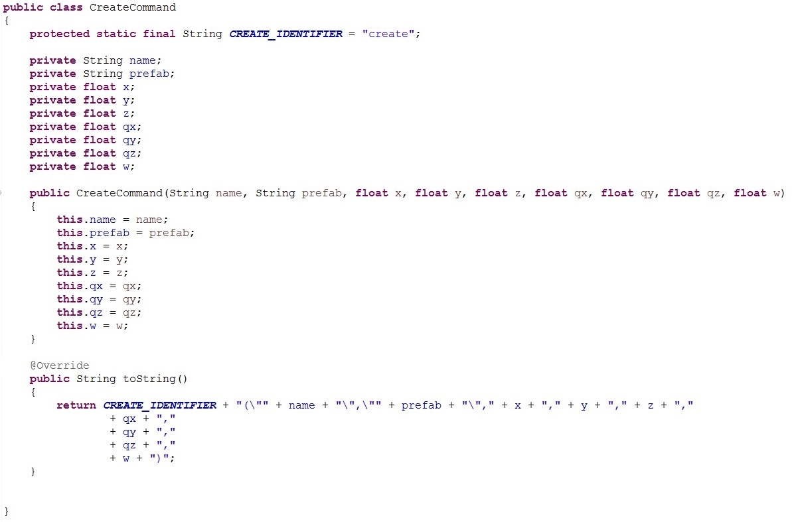
Unity side
The first thing we need to do is to define something that can handle and parse the incoming prolog goals that come from the console actor. Since we want to use the default client's handler, that is TcpReactiveActorClientHandler, what we need are some prolog theories. More precisely, we introduce two different files.- Utility theory: offers some support rules about data checking and net communication.
-
Actor theory: defines all the possible commands that the console actor may send (i.e. move or create commands).
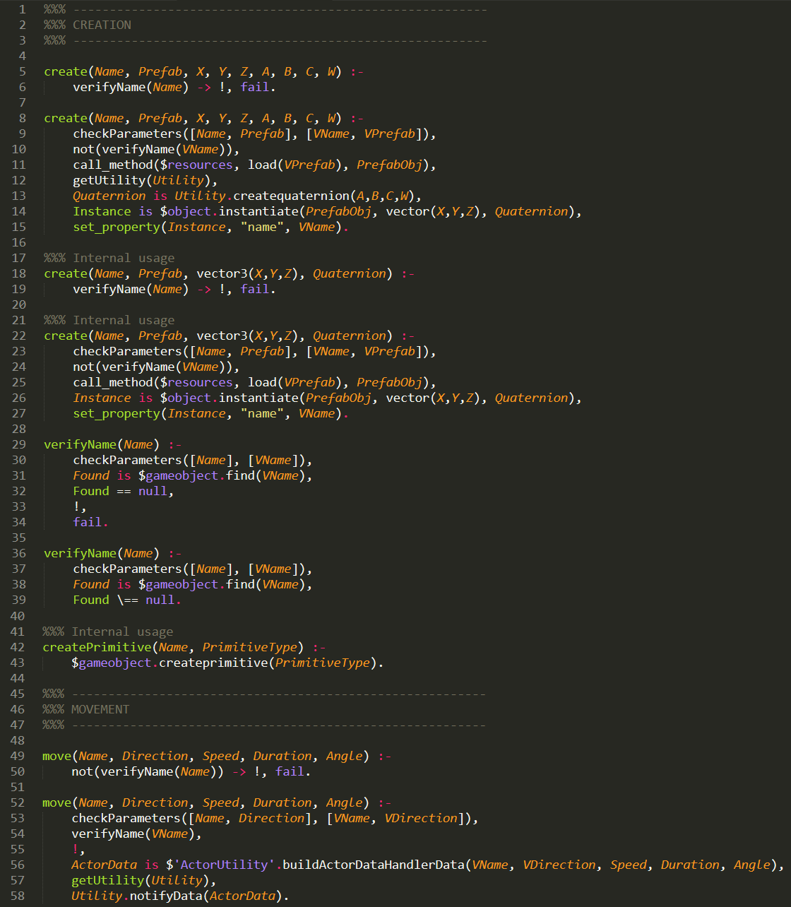
However, this is not enough since we still have to map some Unity specific tasks to incoming commands. In order to do so, let's see what UnityPrologUtility can offer.
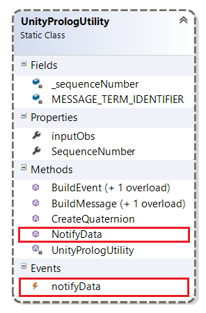
As you can see, there's the possibility to use the notifyData event, which internally is viewed as an IObservable<EventArgs>. However, since the console actor sends movement data, we need to define a proper structure that can wrap this kind of information. Therefore, we introduce the ActorDataHandlerArgs class that derives from EventArgs.
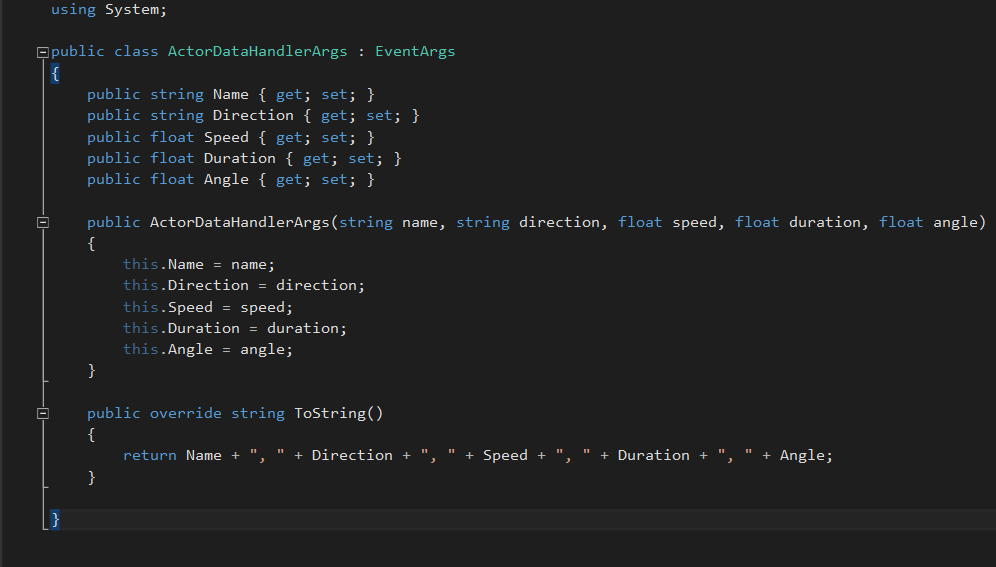
In order to create an instance of the ActorDataHandlerArgs class, we define a very simple utility class that can be called from the actor theory.
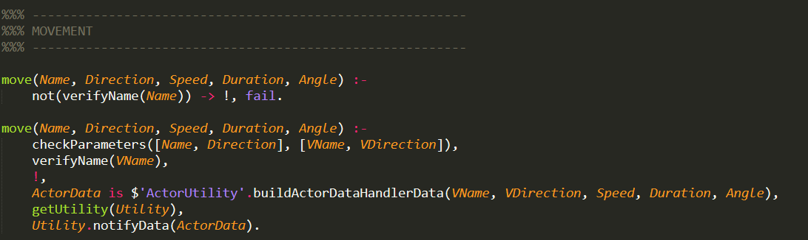
At this point, we still need to define all the configurations needed to simulate our actor. In particular, we have to describe the set of symbols to which the actor is sensitive to and a proper mapper class that maps a set of Unity specific actions to them. Concerning the Configuration package , we know that the SettingsDatabase class requires Json configuration files and the associated C# wrapper classes.
Firstly, we have the GlobalSettings json file which defines the settings to mapper association.
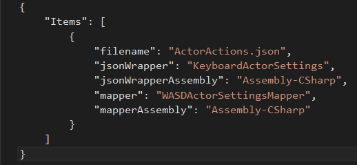
Secondly, we define the ActorSettings json file that describes the set of symbols to which the simulated actor should be sensitive to and some further properties useful for the mapper class. In this case, since we have defined only one actor in our qa system, the Json settings file contains only one configuration. In particular, we expect to create an actor called robotfacade_ctrl, to which will be associated the below configuration file.
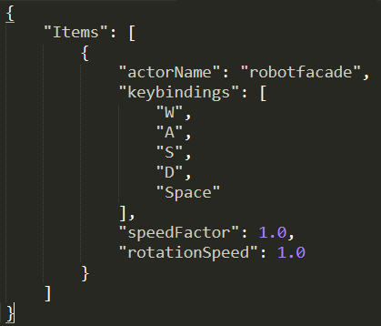
Once done, we are now ready to write our movement C# monobehaviour script, that is MovementObserver, which will be attached to the actor. For this example and the further ones, I'll use the CustomActor prefab model in order to represent the actor. In particular, since the imported model has its own animation clips, the MovementObserver script takes also into account the animation management aspect that can be represented by the following finite state machine. Please note that the MovementObserver works even if the actor has no animations at all.
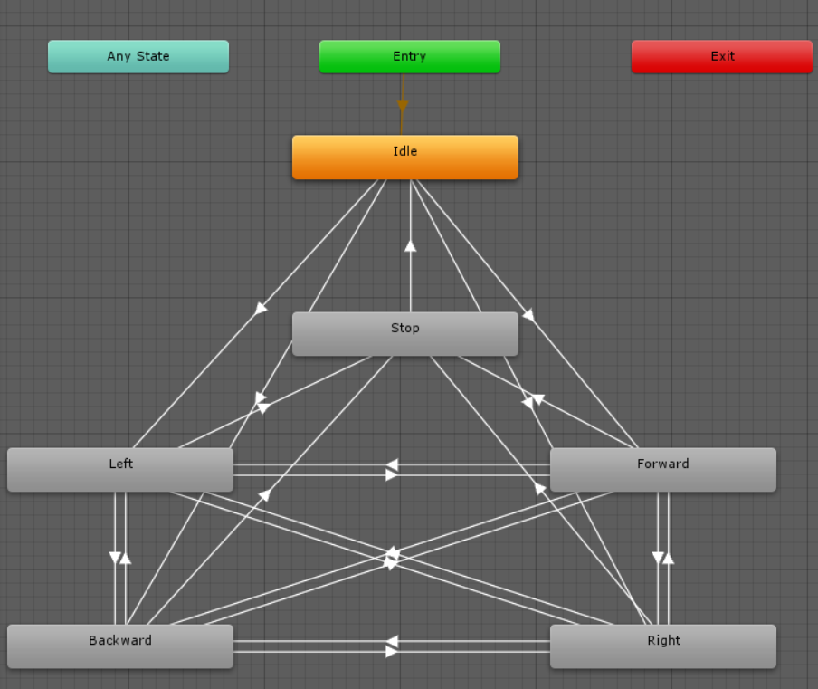
Before seeing the results of this example, let's take a look at the whole system's diagram.
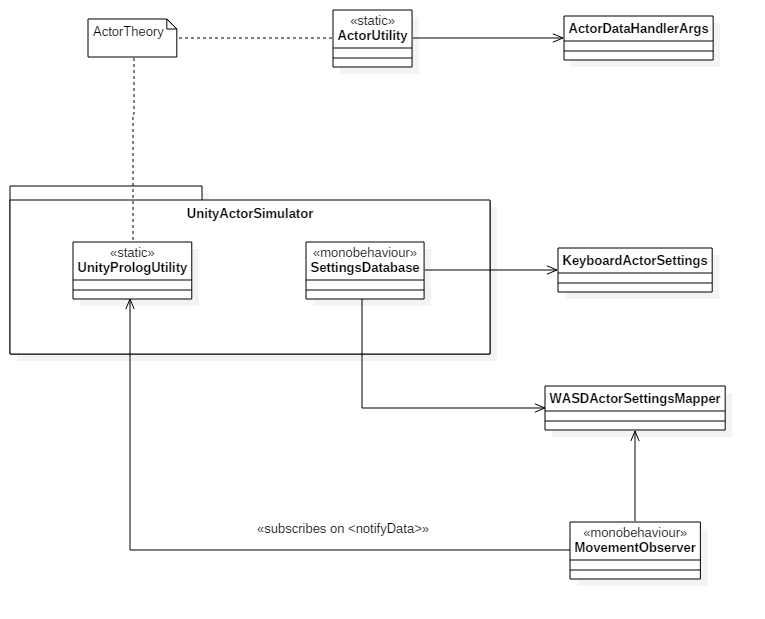
And now let's admire the final results!
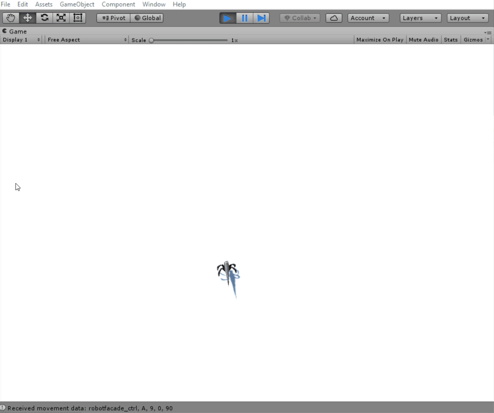
Example 2: Detecting Obstacles
We want now to extend the previous example, in order to allow our actor to detect obstacles. More precisely, we want to simulate the behaviour of an ultrasonic sensor which act as a sonar (i.e. arduino ultrasonic sensor). Moreover, the data stream generated by this custom script should communicate with the QActors's framework, in particular with the QActor counterpart of the simulated actor.Thus, we introduce the Sonar C# monobehaviour script, which has the ability to detect objects that are located in front of the actor within an arbitrary range.
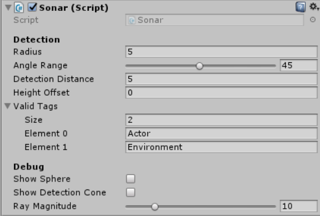
As you can see, the Sonar script has several parameters. Let's try to explain each one in more detail.
- Radius: refers to the sphere's radius that is centered on the gameobject that has the script as a component. By doing so, the Sonar script is able to detect every object inside the sphere. After that it proceeds verifying if each one satifies the conditions expressed by the other parameters. The below images reports an example debug view of it, with the radius parameter set to 5. If you want to enable this kind of view, simply toggle the Show Sphere option on.
- Angle range: refers to the detection cone's spread factor, which its used in order to find objects. The below image shows an example debug view of it, with the angle parameter set to 45 degrees. If you want to enable this kind of view, simply toggle the Show Detection Cone option on. More precisely, you will see the cone as soon as entering play mode. The Ray Magnitude option determines the cone delimiters' length (the red lines in the below image). Please notice that this parameter does not affect the sonar's detection behaviour but serves only as a debug tool.
- Detection distance: refers to the distance between two vectors, which are respectively the actor's position and the obstacle's one. The parameter expresses the threshold under which the sonar can detect objects.
- Height offset: refers to the sensor's height. By default it is set to 0 which means that it uses the gameobject's position.
- Valid tags: the obstacles detection can be filtered by using gameobjects' tags. The examples reported in this page usually use two types of tags: Actor and Environment. Anyway, in the case that not even a single tag is defined, the Sonar script will detect every type of gameobject.
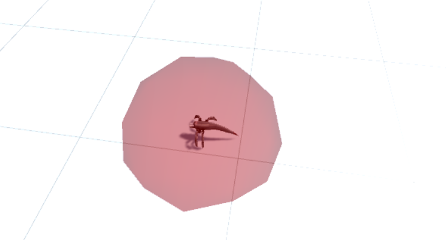
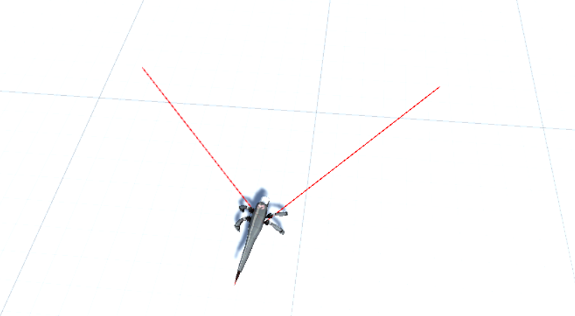
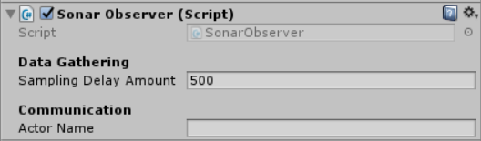
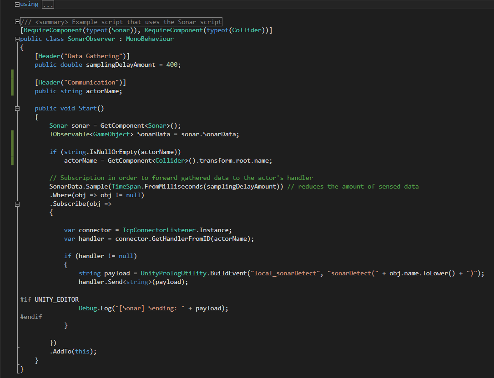
As you can see, this script is a Monobehaviour that has two public and customizable parameters.
- Sampling Delay Amount: refers to the sonar's data sampling frequency, expressed in milliseconds. This type of parameter was introduced for performance reasons exclusively.
- Actor Name: refers to the client's handler ID to which the data should be sent. If no name is expressed, the CheckName function will try to find a handler that has the script's root gameobject name as ID (since it can be in a hierarchy like the BaseActor prefab).
The following clips refers to the below system's qa description, which simply extends the one shown in Example 1 by making the QActor sensitive to incoming sonar detection events.
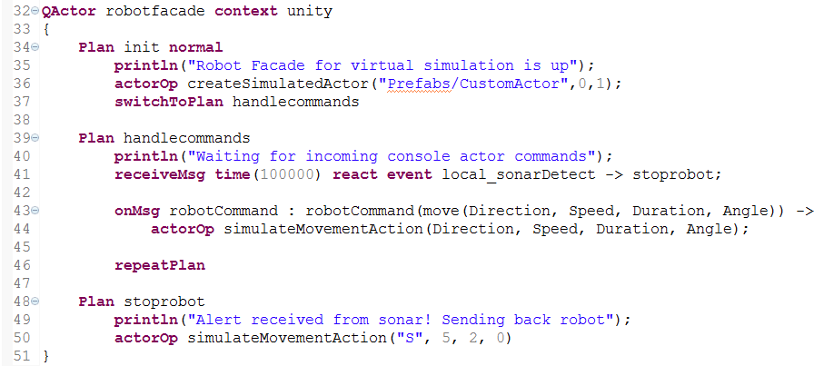
Detecting a wall obstacle
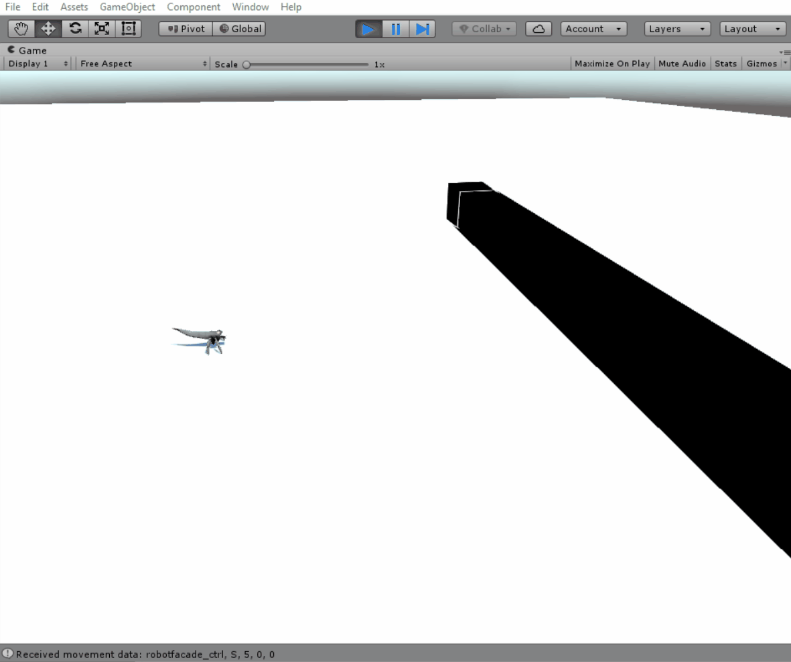
Passing under a bridge like obstacle
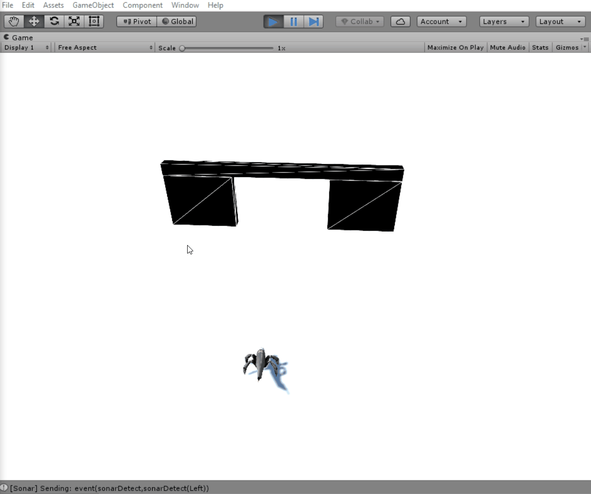
Example 3: Multiple Actors
In order to test the interactions between two sonar equipped dynamic entities, in this third and last example we want to further extend the current system by adding a new actor. Therefore, let's introduce a new actor named Explorer that is sensitive to its console commands. You can download the whole qa system file by clicking here .
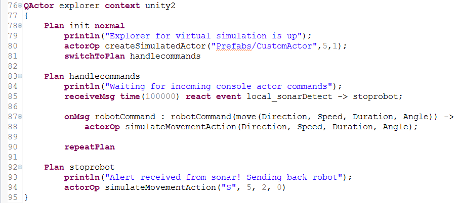
As you can see, the Explorer actor is more or less identical to the first one, except for the sonar's data reaction behaviour. Eventually, let's see how these two actors interact with each other.
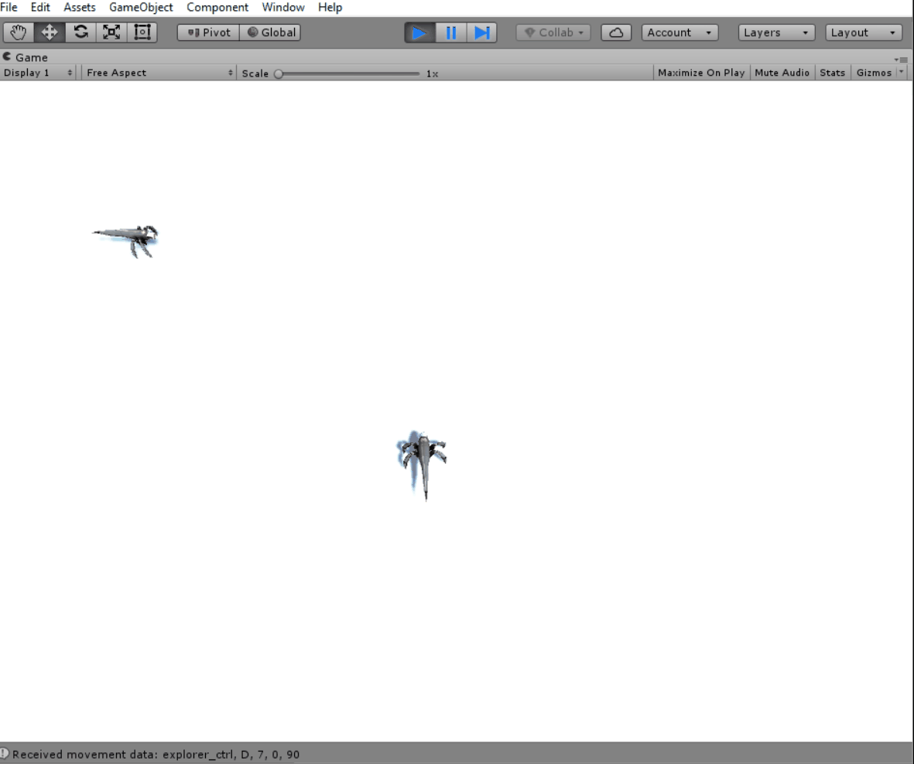
Extra
In order to easily move in the Play scene like in the Editor one, you can use the following utility script called FlyCamera, which can be viewed at this link . If you want to use it, since it is kinda useful, simply add the script as a component to your Main Camera object.
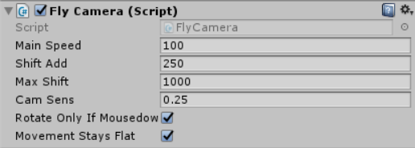